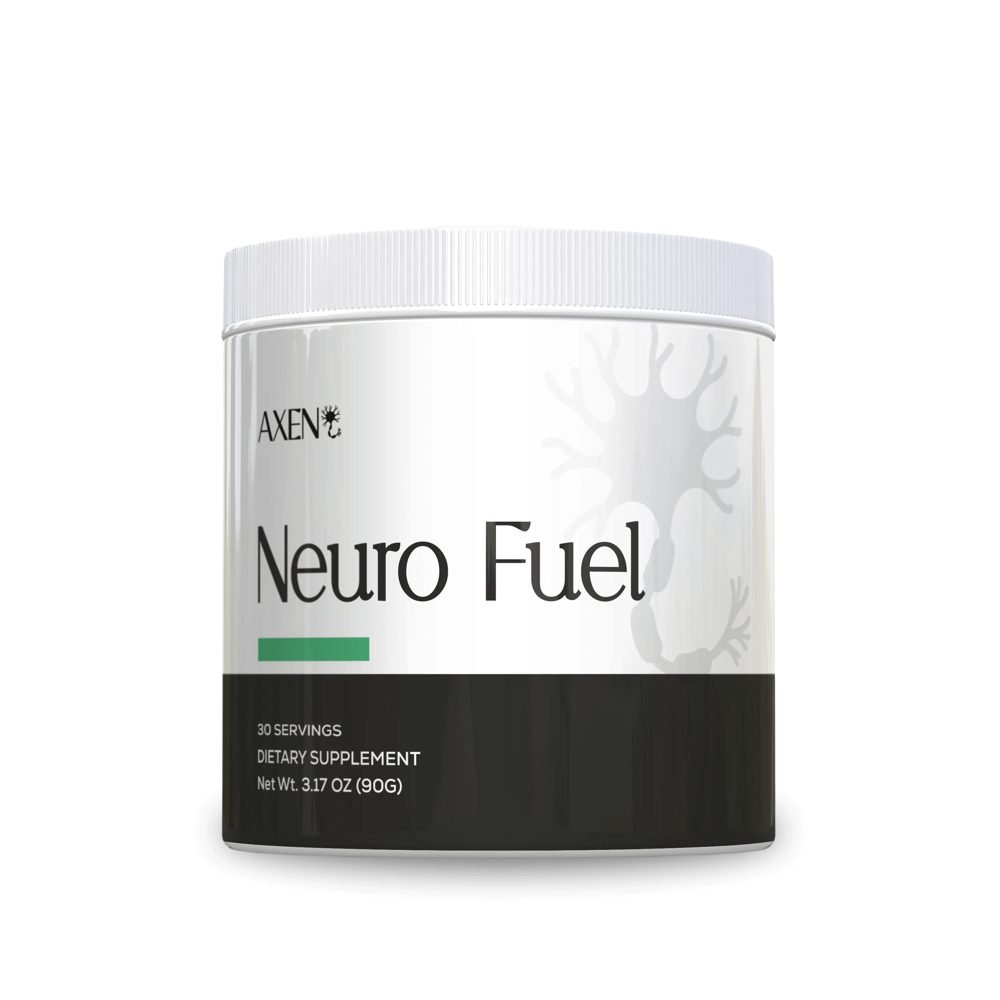

What If I Told You That A Simple Mushroom Could Eliminate Brain Fog and Increase Focus by 64%?
I Also Thought It Was A Scam — So I Decided To Test It Myself.
Researcher & Nutritionist
"I swore it was a scam... until I saw the clinical data and felt the fog lift."
By Sarah Mitchell
Functional Nutritionist & Cognitive Health Researcher
Last update:
I Swore This Was Another One Of Those Internet "Tricks" (Honey Trick, Pink Salt Trick) But No — See How I Had To Eat My Words
I test supplements for a living. I've consulted for wellness companies, sat on expert panels, and tested more formulas on my own body than I care to admit.
And here's the truth: Nine times out of ten, I tell people to save their money.
So when yet another mushroom product started going viral on the internet, I had the same reaction you probably did:
"Oh, look, the internet discovered mushrooms… again."
"I've tried the mushroom coffee. Spat it in the sink. Felt nothing."
"A supplement? Eliminating brain fog? I'll believe it when I feel it."
So many viral wellness products follow the same script:
So I fully expected this Lion’s Mane supplement to be yet another overrated failure. Until a document landed on my desk that made me say: "Wait, really?"
A study published in the International Journal of Medicinal Mushrooms showed that Lion’s Mane significantly increased NGF (Nerve Growth Factor) levels in adults after just 8 weeks of use.
This wasn’t a "brand-sponsored influencer test." These were real adults taking the product daily… with tracked results.
Proven Clinical Results
After 8 Weeks, Participants Reported:
| Benefit | Improvement |
|---|---|
| Brain fog reduction | 58% |
| Cognition improvement | 74% |
| Memory improvement | 44% |
| Focus increase | 64% |
* Data published and verified by third parties — something most mushroom products cannot offer.
Still, I wasn’t convinced. Numbers are one thing. Real life is another.
So I sent the study and the formula to a few nutritionist friends who test products the same way I do. I expected more eye-rolling. Instead, I got this:
The Mental Lapse That Made Me Break Down
Honestly? My own brain fog was getting harder and harder to hide.
It started quietly, with small slips that I kept ignoring:
- • Losing my train of thought mid-sentence.
- • Walking into a room and completely forgetting what I went there for.
- • Avoiding organizing the closet because my brain felt "too full".
Annoying, sure. But manageable.
Until the day my brain truly betrayed me.
I was on a video call with a long-time client — someone who trusts me with her health. And I called her by the wrong name.
Twice.
I laughed it off and apologized. Blamed it on "end-of-day fatigue".
Then I recommended a meal plan that included gluten.
She has a gluten intolerance. I've known this since day one.
I saw her expression change from warm → confused → hurt.
And I felt something I hadn’t felt in a long time.
Shame. The kind that burns your face.
When the call ended, I closed my laptop, went to the kitchen, and leaned my forehead against the counter. And I cried.
Because deep down, I knew this wasn't just stress. Something in my brain wasn't working like it used to.
And for the first time, I had to ask myself the same hard question I ask my clients:
"Is this just burnout… or is there something deeper happening?"
How Does "Brain Fog" Show Up In Your Life?
If you recognize these daily slips, you're not alone:
Focus Slips Away
You can't concentrate on simple tasks, you don't remember what needs to be done… words get jumbled, nothing sticks, and your brain wanders no matter how hard you try.
Relationships
You zone out while your partner or kids are talking. You forget conversations you just had, or forget to reply to a message.
Memory Lapses
You miss the time to pick someone up, forget a birthday, or blank on a simple detail — and you see that look of worry.
Social Life
It's your turn to host family — no big deal — but you get overwhelmed and give up. When you can't get organized, your confidence plummets.
"If these moments are piling up, they’re probably pointing to something bigger."
What’s Really Behind These Memory Lapses?
If you’ve been feeling off — foggy, forgetful, unfocused — you’re not lazy. You’re not just “getting old.”
That jumbled feeling, of not being able to think? That's what scientists call “Neural Fatigue” — the progressive depletion of the biological signals that allow the brain to repair itself.
What Science Has Discovered:
Studies show that after age 40, our brain progressively reduces the production of a protein called NGF — Nerve Growth Factor.
NGF is the biological signal responsible for:
- Keeping neurons alive
- Preserving neural connections
- Allowing the brain to form new synapses
When the brain doesn't get enough NGF, it enters what scientists call “survival mode”:
- • It reduces the formation of new connections.
- • It slows down memory consolidation.
- • It decreases processing speed.
Not because you’re “too old.” But because the system decided it’s not safe to invest in performance.
Neural Fatigue Builds Up When:
It's rarely one big thing. It's everything hitting you at once — until your brain is overstimulated, oversaturated, and completely drained.
Of course, you can add caffeine… more stimulation. But that’s like adding a marching band to the chaos.
Ok… How Do I Eliminate This “Neural Fatigue”?

Going from “burned out” to focused isn't complicated. You simply need to give your brain the daily support it needs to optimize:
- Stress Chemistry
- Neural Growth Signals
- Gut-Brain Connection
Axen NeuroFuel® is the first formula I’ve tested that supports all three areas.
INTRODUCING
Axen NeuroFuel®
The first formula I tested that supports stress chemistry, neural growth signals, and cognitive clarity — all in one simple daily ritual.

1. Axen NeuroFuel® Reactivates Neural Growth Signals
Powered by Lion’s Mane + Vitamins B9 and B12
Axen NeuroFuel® is formulated with nature’s brain activator: Lion’s Mane. This super compound stimulates the production of neural growth factors — the signals that help brain cells stay healthy and communicate efficiently over time.*
A study published in Phytotherapy Research showed that participants who took Lion’s Mane for 16 weeks showed significant improvement in cognitive function compared to the placebo group.
Together, these subtle but powerful changes make life feel lighter, calmer, and more manageable.
Why Most Products Fail
❌ Most Brands Use:
- • Low dose powders
- • Mycelium grown on grain (starch)
- • Toxic alcohol-based extraction
- • Generic vitamin forms
✅ Axen NeuroFuel® Delivers:
- Clinical dose per serving
- 6 synergistic ingredients
- Fruiting body extracts
- Active vitamin forms
The NeuroRestore™ Protocol
What makes Axen NeuroFuel® different is that it’s not just “another memory supplement.” It’s a three-pronged system designed to attack the root cause of neural fatigue:
🧠 PHASE 1: NeuroRestore™ Signal
Reactivates neural growth signals
- • Lion’s Mane (standardized extract)
- • Vitamin B9 (active form - methylfolate)
- • Vitamin B12 (active form - methylcobalamina)
“Tells the brain: it’s safe to exit power save mode. You can start growing again.”
🛡️ PHASE 2: NeuroRestore™ Shield
Protects against stress corrosion
- • Rhodiola Rosea (adaptogen extract)
- • L-Theanine (calming amino acid)
Blocks the impact of cortisol and keeps the brain in a safe state for rebuilding.
⚡ PHASE 3: NeuroRestore™ Sustain
Sustains clarity and focus in the short term
- • Alpha-GPC (acetylcholine precursor)
- • Natural caffeine from green tea (functional microdose)
You feel the difference day-to-day while the structural repair happens in the background.
Signal™ reactivates neural growth factors.
Shield™ protects against the corrosion of modern stress.
Sustain™ maintains mental clarity while rebuilding happens.
Everything in a single formula.
No harsh stimulants. No side effects. At a fraction of the cost of clinical treatments.
Week by Week: What I Actually Felt
When I Finally Gave My Brain What It Was Begging For
FIELD DIARY
WEEK 1🟢 WEEK 1: The Fog Starts to Clear
On the first morning, I took the powder with my breakfast expecting nothing. But somewhere between breakfast and lunch, something… shifts. The brain fog doesn't disappear, but the noise drops.
- WEEK 2
🟢 WEEK 2: Something is Clicking
By Week 2, I start noticing changes similar to what study participants report — better focus, smoother transitions, and less mental fatigue.
- WEEKS 3–4
🟢 WEEKS 3–4: My Brain, Rebooted
By Week 4, I experience results similar to those reported in the studies:
-
My husband says I seem “less fried” and more present
-
At dinner with friends, I feel like the funny person again
"It's not a personality transplant. It's just me, but clearer."
What Others Are Saying
I know what you're thinking: “Are these testimonials real?” Honestly, I wondered the same thing — until I tested the supplement myself and felt exactly what people were describing.
“I love this supplement! First, it's easy to take and doesn't taste bad. I feel so much clearer at 53 and in the middle of menopause it makes a difference! I swear by it and won't go a day without it.”
— Mary J. (53 years old, menopause)
“Best memory supplement I've ever used. Definitely does what it says. More energy, more mental focus. I'll be ordering again. I've been telling everyone I meet to try it.”
— James M.
“These are great! Axen isn't magic, but it works to level out my focus in a way that I actually take action on my to-do list before the squirrel inside me tells me to do something else. It's subtle but effective.”
— Robert L.
“Surprised. I was skeptical, but was surprised by a distinct improvement in my memory and mental clarity after just a few weeks. I can remember number sequences now, and don't seem to get as confused in daily life. Good news at 76!”
— John P. (76 years old)
“Felt a difference in just a few days. After taking it for two weeks, I'm impressed how my brain fog is practically gone, and my energy is through the roof… my friends noticed the difference and are trying it now… so far they're also impressed.”
— Jeff R.
What You're Actually Getting
Everything included in every tub:
How Do I Use It?
The simple routine, nutritionist-approved
Take one scoop in the morning
Preferably with breakfast. It’s that simple.
Keep the tub somewhere visible
Next to your water bottle or laptop — anywhere your routine takes you.
Be consistent (boring, but it works)
The studies lasted 8 weeks. Most notice changes around Weeks 2–4.
Watch for the early wins
- Fewer brain freezes
- Smoother focus
- More stable energy
- Easier transitions between tasks
- Less of that heavy, “cotton-like” fog
The Verdict
"I Came In Skeptical. I Left Eating My Words — And Wanting The Next Dose."
I checked the clinical data. I checked the extraction ratios. I checked the quality testing. And then I checked my own brain.
The shift was real.
4.6 / 5
Official Sarah Mitchell Rating
"The formula deserves a 5. The only reason it's not perfect? Availability issues."
Expert Summary
"If you want clearer thinking, more stable focus, and a daily ritual that feels more like self-care than a chore, give Axen NeuroFuel® 8 weeks."
This powerful daily supplement delivers cleaner thinking and smoother energy — without giant pills or a bad taste.
Quick Warning About Stock
While finalizing this article, I received a message from someone on the Axen team:
“Our last promotion sold out most of our stock. We’ve reserved a small batch just for your readers — but once these are gone, we can't guarantee they'll be back before next month.”
For the record: I rarely get messages like this — which is why I'm passing it on.
What If I Don't Feel Anything?
Axen offers a 30-day money-back guarantee on your first order.
You can email support@axen.com within 30 days and request a refund.
No hurdles. No complicated forms. No questions asked.
As someone who has tested hundreds of supplements, I can tell you this: a company that offers a real 30-day guarantee is a company that trusts its formula.
So Does It Make Sense To Try?
Let me ask you this. If just two capsules a day helped you feel clearer, calmer, and more focused — without the crash, the jitters, or the mental drag — what would your day actually look like? How much more could you achieve with that support?
Axen NeuroFuel®
Now that you've seen the research and the results, this is the natural moment to try.

Offer Expiration:
30 Days or Your Money Back
"If you don't notice a difference, if the supplement doesn't seem right for you, or even if you simply don't like it... you can email support@axen.com and request a refund. No hurdles. No questions asked."
256-bit SSL Encryption